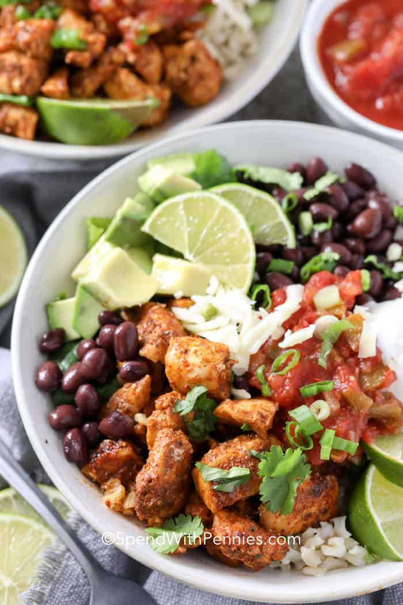

Chicken Burrito

Description
This rich and fragrant chicken curry is sure to become a recipe favorite.
Slow simmer tender chunks of bite-sized chicken in a simple and delicious curry sauce made with spices, coconut milk, and curry.
Ingredients
- Chicken
- Coconut Milk
- Spices
- Umami Flavor
- Variations
Steps
- Heat oil in a large pot or deep skillet over medium-low heat. Add onions and minced garlic. Cook until onions are fragrant and softened.
- Add chicken to the pot and cook for 2-3 minutes, allowing it to brown slightly. Stir in the curry powder and paste, and cook for an additional 3-5 minutes.
- Pour in coconut milk and simmer for 15-20 minutes, or until the chicken is fully cooked.
- Add the water or chicken stock, and simmer until the curry reaches the desired consistency.
- Stir in the brown sugar, fish sauce, and lime juice. Taste season with additional salt if desired.
- Top with fresh cilantro, serve over cooked rice.